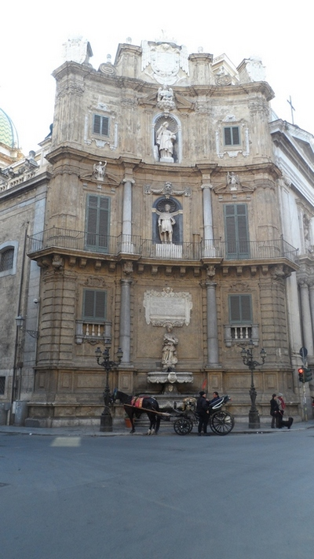
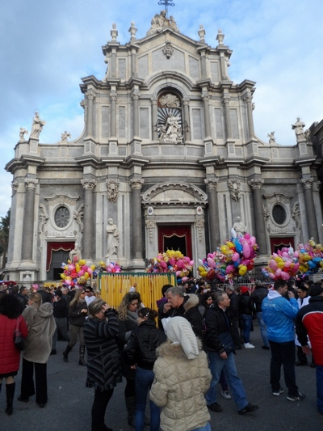

Visiting Sicily in Italy
There are two things you have to keep in mind when you are in Sicily. You cannot buy tickets on most buses and if you don't have one when you board the bus they'll probably drop you at the next bus-stop. So get your bus tickets from the "tabacchi" (tobacconist's) before boarding your bus.
The second thing to bear in mind is that after deciding what you want to order in a pastry shop you have to pay first and get a scontrino (receipt) and only with that can you go to collect your order. In other words it's a case of Pay first, eat later.
Palermo
Click on any photo below to reproduce its original size in a new page. (All photos were taken in February 2014). The magnificent beach and its adjoining mountain at Mondello, 10kms away from Palermo. |
 The facade of the Alle Terraze restaurant at the other end of Mondello beach. |
 The Pretoria Fountain, popularly known as the "Fountain of Shame", because of its nude statues. |
Palermo is actually Sicily's capital city. If you come by coach to Palermo from Catania, the bus will stop next to the Central Railway Station of Palermo. The coach from Catania to Palermo is run by the SAIS company. Make sure you don't miss the coach as it is some 100 metres away from the booking office on the opposing corner of the road. The trip takes 2 hours and 40 minutes and a ticket costs 15.20 euros. Although the return ticket costs only 24.20 euros they will refuse to sell one if the return trip is not on the same day. There is a bus every hour or every 1 1/2 hours, depending on the time of the day.
It's easy to make a quick tour of Palermo if you have only a day. From the Central Station cross the big square and walk down Via Roma for less than a kilometre until its intersection with Via Vittorio Emanuele. Turn right if you want to see the Vucciria market and Piazza San Domenica else turn left for the Pretoria Fountain with its unique nude statues. If you continue walking straight ahead you will notice the spectacular Quattro Canti (meaning four corners) at its intersection with Via Maqueda in the Piazza Vigliena. You might think you are in a museum but actually you are in the middle of a busy intersection, such is the magnificence of the four facades on four different and opposing buildings. Continue walking and you will notice Palermo's famous Cathedral to your right. Leaving the Cathedral to continue walking along the same road you will not fail to notice the Porta Nuova at the very end of the road and to its left the Palazzo Reale.
 The much-visited cathedral in Palermo. |
 A vegetable and fruit shop in the Vucciria market. |
 The facade of the San Domenico church. |
While in Palermo don't miss the nearly 1km-long Mondello beach about 10kms away. It is really second to none. To go there take Bus 101 from near the Central Railway Station (Stazione Centrale) or at one of its stops along the Via Roma. Get down at Politeama and wait at the same bus stop for Bus No. 806 which will take you all the way to Mondello beach (the bus actually ends there).
 Cannoli, a pastry dessert |  Arancini, fried rice balls |
Syracuse (Siracusa)
There is a direct bus from Catania to Syracuse. You can check the times from here. The trip takes 1 1/2 hours and costs 6.20 euros for a single trip and nearly 10 euros for a return ticket (which has to be on the same day). Once you arrive at the coach terminus turn backwards and continue walking straight on till you arrive at the crossroads. There, follow the directions pointing to Ortygia (also spelt Ortigia) which is the central point of interest in Syracuse (apart from the Neapolis archaeological park). Keep walking straight on for about a kilometer till you come to a bridge. Cross the bridge and you will be in the island of Ortygia, the place of primary interest to tourists. Once across the bridge you will see the remains of what was formerly the Apollo Temple. Continue walking forward until you reach the Piazza Archimede (see photo). From here a short walk will take you to Syracuse's Duomo in the Piazza del Duomo. The bridge in Syracuse that leads to Ortygia. |
 What remains of the Apollo Temple in Syracuse. |
 The Fountain of Diana in the Piazza Archimede. Captivating! |
When in Siracusa you must also visit the Neapolis archaelogical park to see the Greek theatre and the Roman amphitheatre as well as what is known as L'Orecchio di Dionisio or Dionysius's ear. Make sure you bring a torchlight along if you hope to explore the cave as it is completely dark inside. Shout out loud and hear the echo of your voice!
Also do not rush to the entrance of the Neapolis archaelogical park if you have not bought your tickets yet. The tickets are sold not at the main entrance but from the ticketing office some 100m away on the opposite side of the road (at the end of a long row of souvenir shops).
 |
 The Sanctuary of the Holy Mother of Tears (Il Santuario delle Madonna delle Lacrime) as seen from the inside (above) and outside (left). Photo on right shows L'Orecchio di Dionisio (Dionysius's ear) in the Neapolis archaelogical park nearby. |
 in the Neapolis archaelogical park of Syracuse") |
As in Catania, the budget traveller can have difficulty in finding cheap accommodation in Siracusa. However if you are looking for a hostel-type of hotel with bunker beds, then the LOL Hostel at 94, Via Francesco Crispi could be just what you are looking for. The hostel is really well-situated, being next door to the train station (with trains going to Catania and Taormina) as well as the long-distance bus terminus and also within walking distance of both Ortigia and the Neapolis archaelogical park. The cost of 20 euros for a night's stay includes a solid breakfast as well as bedsheets and the use of a common kitchen.
 The Catacombs of San Giovanni, an underground city of the dead. |
 in Syracuse, Sicily") The Roman amphitheatre (Anfiteatro romano). |
 in Syracuse, Sicily") The Greek Theatre (Il teatro greco) is on the slope of a hill. |
Catania
If Catania should be your first stop in Sicily be prepared for some unpleasant surprises. The public transport especially is quite chaotic. There are five or six different bus terminals spread all over the city centre so one can easily get lost going from one terminal to another in search of a bus. That apart, Catania is well worth a visit, the principal attractions being a ride by cable car to the top of Etna mountain and a day trip to neighbouring Taormina, an up-and-coming holiday resort.The trip by coach from Catania to Taormina takes 1h 10 mins. Go here for the bus time-table.
 View of neighbouring mountains and seaside from top of Taormina. |
 There is a cable car from Taormina to Mazzaro beach. |
 The Giardini Naxos beach is also popular in Taormina. |
The best suggestion I can offer if you should pass a night in Catania before exploring the rest of Sicily is to stay in a hotel near the Piazza Duomo. The celebrated cathedral is found here and the principal shopping road, la Via Etnea, starts from here. Besides Piazza Duomo is within walking distance of the central railway station and the booking offices of the various long-distance buses going to Palermo and Syracuse.
It is not easy to find good budget hotels here. The Hotel Biscari at 7, Via Anzalone is one such though you have to climb up two floors to get to the hotel so it is not for those who have difficulty in climbing stairs. If that is not a problem then it is a good place to stay in Catania as it is well situated, being very near to the Piazza Duomo, the fish market, the Teatro Romano, the main shopping thoroughfare at Via Etnea and the central railway station and long-distance bus terminuses. Summer prices are a bit higher but for the rest of the year its rates are as follows: 30€ (for one person, TV, shower and breakfast included) and 50€ (for two persons).
 Undoubtedly the main reason why tourists come to Sicily's Catania is to see the volcano at Mount Etna. |
 Apart from Mount Etna, the cathedral in Piazza Duomo is Catania's top tourist attraction. |
 A stone's throw from the Piazza Duomo in Catania is a lively fish market that is well worth a visit. |
Apart from the Etna volcanic mountain another must-visit place in Catania is Taormina, which is endowed with a mountain as well as a sea and is as lively at night as it is during the daytime, especially in summer.
A 15-minute cable-car ride from Taormina will take you to the Mazzaro beach but if you should take the coach from Catania to Taormina then you will be passing by the Giardini-Naxos beach with its vast stretch of fine, sandy beach.
If you are not scared of crowds the best time to come to Catania is during the first week of February (3rd to 5th February) when the annual procession in honour of Saint Agatha, the patron saint of Catania, takes place.
But any time of the year is good for a visit to Mount Etna, though it is even more fun in winter when its summit (accessible by cable car costing 30 euros for a return ticket) is sometimes covered with snow, making you feel that you are at a ski resort. And yet, believe it or not, you are really skiing on the top of a volcano! (Actually it's not just a single volcano as there are multiple craters all around, each of which is capable of erupting.)
However there is only one public bus service a day to and from the mountain and you board it in front of the Catania central train station. The AST company bus leaves at 08h15 daily for Etna and the return trip is at 16h30. The trip either way takes two hours with a short stop at Nicolosi, which is the town nearest to the mountain. A return ticket costs 6.60 euros and can be bought from the "Terminal Bar" directly opposite the Central Railway Station square. During summer (from 15 June to 15 September) there is another bus from Catania to Mount Etna at 11h20. You can check from their website here.
 The Teatro Greco Romano is not too far from the Piazza Duomo. Be prepared for lots of climbing up cobbled steps! The Teatro Greco Romano is not too far from the Piazza Duomo. Be prepared for lots of climbing up cobbled steps! Etnapolis, a huge shopping complex at the outskirts of Catania. There is another mega shopping complex called Centro Sicilia in Catania. |
 This elephant, the symbol of Catania, is made from volcanic stone. It is in front of the Duomo. |
 The arch is the entrance to Taormina's main shopping street called Corso Umberto. Taormina is easily accessible by a coach departing from near Catania's central railway station. A return ticket costs 8.30 euros and the trip takes 1 hour and 10 minutes. As the bus approaches the top of Taormina you will be able to take in fantastic views of its landscape where the mountain meets harmoniously with the sea. Watch out for the coach times though as on Saturdays, if you should miss the 14h00 bus to Catania you will have to wait till 17h45 for the next trip - and that's not a joke! |
 When in Sicily you can eat oranges to your heart's content. They are really cheap - and sweet, the sweetest of the various varieties of Sicilian oranges being the tarocco. Besides, the "blood oranges" of Sicily are well-known for their antioxydant qualities, so don't deprive yourself of them when you are there! |
 |
 Above:The Feria San Agata in honour of the patron saint of Catania is held at the Piazza Duomo in the first week of February every year. Left: One of the four corners (Quattro Canti) at the intersection between Via Vittorio Emanuele and Via Maqueda in Piazza Vigliena in Palermo. |